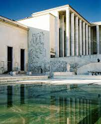
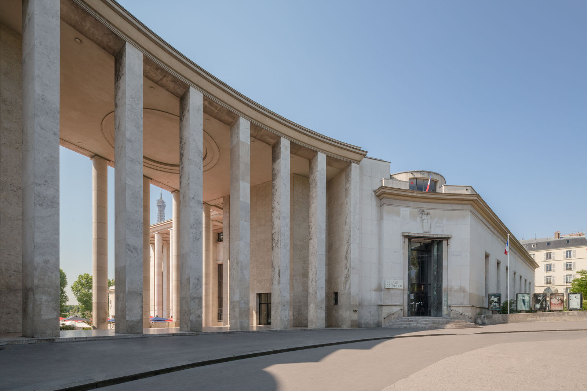

L'histoire du palais
Construit à l’occasion de l’Exposition internationale de 1937, le bâtiment dénommé « Palais de Tokyo » tient son nom du « quai de Tokio » (l’actuelle avenue de New York). Il est d’emblée conçu pour abriter deux musées bien distincts : le Musée d’art moderne de la Ville de Paris d’une part, et le Musée national d’art moderne d’autre part.
Son avenir
Une librairie sera mise en place, Les Cahiers d'Art. Le little palais sera rénové et le HAMO lieu d'éducation se voulant être inclusif via l'art ainsi que de pratiquer l'art de manière universelle sera inauguré fin 2022.
